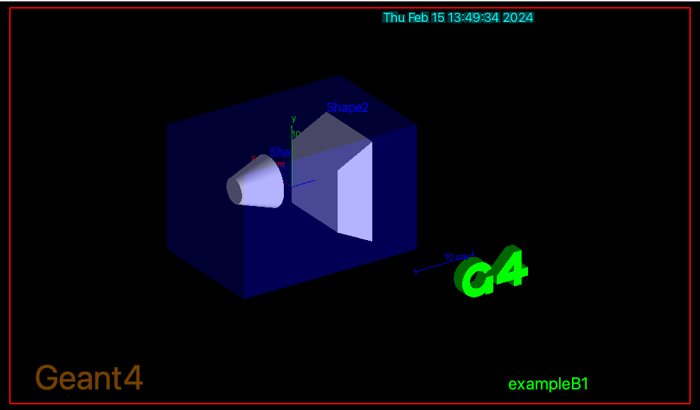

Start the application built in the previous exercise. For this very
first test, we disable Qt interface.
Solution
$ ./exampleB1
Geant4 will initialize and will greet you with some output, the
first lines should read:
###G4STARTLOG1
###G4STARTLOG2
###G4STARTLOG3
###G4STARTLOG4
###G4STARTLOG5
###G4STARTLOG6
###G4STARTLOG7
###G4STARTLOG8
###G4STARTLOG9
Note: G4 can be quite verbose, especially if you have enabled MT
support.
If you receive error messages like ERROR: G4VisCommandsViewerSet::SetNewValue: no current viewer you can
safely ignore them.
If you use Qt:
A GUI window should pop up.
You can type your command in the Session: field at the right-bottom of the window.
You may also pick a command from the left side menu.
Try 10 events and see trajectories.
/run/beamOn 10
If you do not use Qt but use OpenGL visualization:
A visualization window will appear with the geometry displayed.

You will see Geant4 prompt on your terminal screen, where you can issue Geant4 commands.
Try 10 events and see trajectories.
Idle> /run/beamOn 10
- Refer to the presentations at this tutorial for UI interactivity.
- Take your time to familiarize with the Geant4 prompt (for example note
that the prompt has auto-complete, the tab key; history, with
up-down arrow keys).
- Try navigating the GUI help panel.
- Familiarize with the help menu and its sub-menu levels. Can you
find where the
/run/beamOn command is located? What is
the UI command to change the primary particle type?
Compile a second exercise.
Browse the <geant4>/examples/ directory and try
a few examples.
Compile/run them following the instructions of the previous exercises.
Note: Move to an appropriate directory before copying the second example.
Important: some examples may require additional libraries (e.g. GDML), thus may not
compile in this setup.